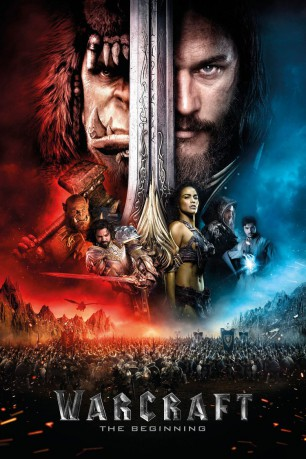

 
 IMDB-Wertung: 7.1 / 10
IMDB-Wertung: 7.1 / 10  Metascore:
Metascore: 
Warcraft: The Beginning erzählt vom Ursprung des Krieges zwischen Menschen und Orks im fernen Azeroth. Einer der Menschen ist der Magier Medivh. Er tauchte in einer Zeit auf, als es galt, ein Areal zu beschützen – und das tat er mithilfe von Magie. Als der Frieden zurückkehrte, nahm er sich eine Auszeit. Doch schon Bald kommen Freunde zu Medivh und bitten ihn, sie in einer Schlacht um die Zukunft der Menschheit zu untertützen. Doch auch auf der Seite der Orks werden Vorbereitungen getroffen, denn ebenso wie die Menschen, steht für sie ihre Zukunft auf dem Spiel.
Jahr: 2016
Dauer: 123 Minuten
FSK: 12
Land: China Studio: UPITonspuren: DD5.1 - ,
Untertitel: Deutsch, Englisch,
Auflösung: 1080p (1920x1080) Größe: 15052 MB
Genre: Action, Abenteuer, Fantasy
Regisseur: Duncan Jones
Drehbuch: Cüneyt Kaya
Soundtrack:
Darsteller:
 Travis Fimmel als Anduin Lothar
Travis Fimmel als Anduin Lothar Paula Patton als Garona
Paula Patton als Garona Ben Foster als Medivh
Ben Foster als Medivh Dominic Cooper als Llane Wrynn
Dominic Cooper als Llane Wrynn Toby Kebbell als Durotan / Antonidas
Toby Kebbell als Durotan / Antonidas Ben Schnetzer als Khadgar
Ben Schnetzer als Khadgar Robert Kazinsky als Orgrim
Robert Kazinsky als Orgrim Clancy Brown als Blackhand
Clancy Brown als Blackhand Daniel Wu als Gul'dan
Daniel Wu als Gul'dan Ruth Negga als Lady Taria
Ruth Negga als Lady Taria Callum Keith Rennie als Moroes
Callum Keith Rennie als Moroes Ryan Robbins als Karos
Ryan Robbins als Karos Dean Redman als Varis / Caged Frostwolf
Dean Redman als Varis / Caged Frostwolf Glenn Ennis als Compound Guard
Glenn Ennis als Compound Guard Terry Notary als Peon
Terry Notary als Peon Michael Adamthwaite als King Magni
Michael Adamthwaite als King Magni Anna Van Hooft als Aloman
Anna Van Hooft als Aloman Callan Mulvey als Warrior
Callan Mulvey als Warrior Kyle Rideout als Officer
Kyle Rideout als Officer Patrick Sabongui als Footman
Patrick Sabongui als Footman Wesley MacInnes als Gate Guard
Wesley MacInnes als Gate Guard Mackenzie Gray als Lordaerian Delegate
Mackenzie Gray als Lordaerian Delegate Christian Sloan als Elf Delegate
Christian Sloan als Elf Delegate Dan Payne als Clansmen
Dan Payne als Clansmen Eugene Lipinski als Finden
Eugene Lipinski als Finden Christina Jastrzembska als Archmage
Christina Jastrzembska als Archmage Frank C. Turner als Prison Mage
Frank C. Turner als Prison Mage Glenn Close als Alodi , uncredited
Glenn Close als Alodi , uncredited Darin De Paul als Additional Voices , uncredited
Darin De Paul als Additional Voices , uncredited G. Michael Gray als Tower Guard , uncredited
G. Michael Gray als Tower Guard , uncredited Raj Lal als Knight , uncredited
Raj Lal als Knight , uncredited Jill Morrison als Indecisive Woman , uncredited
Jill Morrison als Indecisive Woman , uncredited Michael Patric als Human Villager , uncredited
Michael Patric als Human Villager , uncreditedDatei: X:\2016(N-Z)\Warcraft The Beginning (2016, FSK12, 1920x1080) 3D.mkv seit 12.09.2016
Festplatte: HD 2016(A-Z)
 Es gibt insgesamt 182 Filme in der Gruppe '2016(N-Z)'
Es gibt insgesamt 182 Filme in der Gruppe '2016(N-Z)'